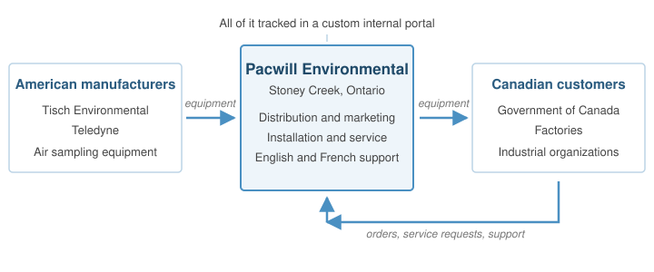
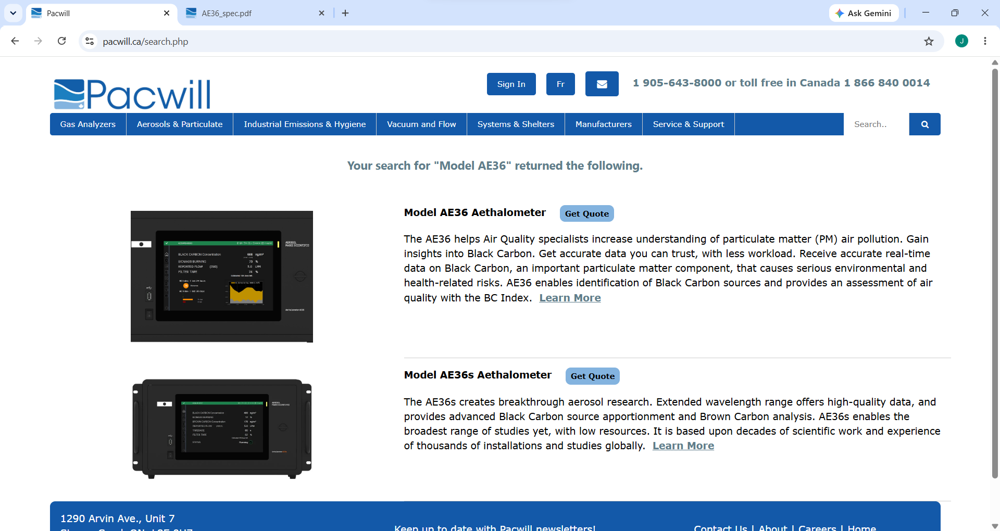
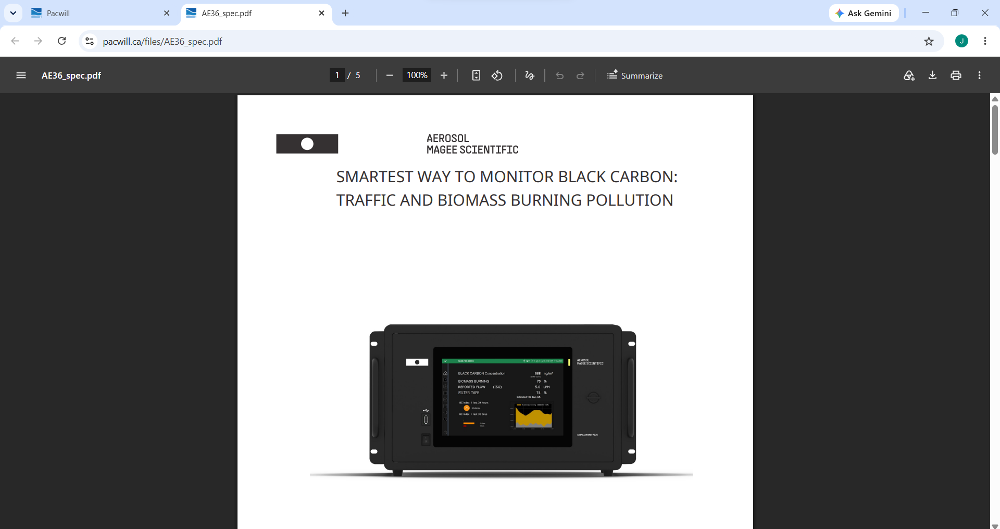
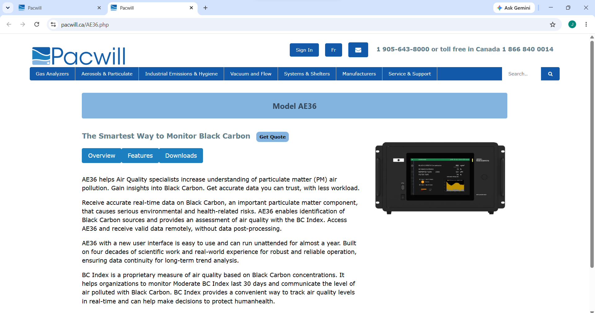
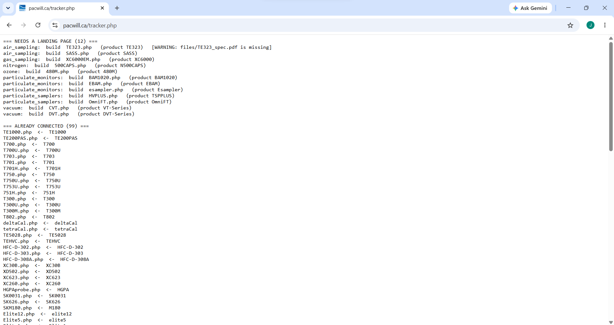
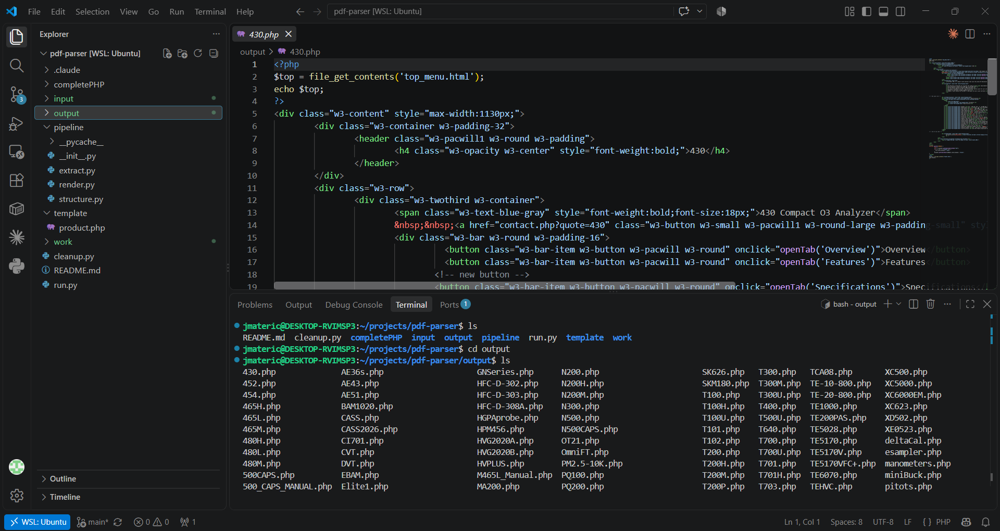
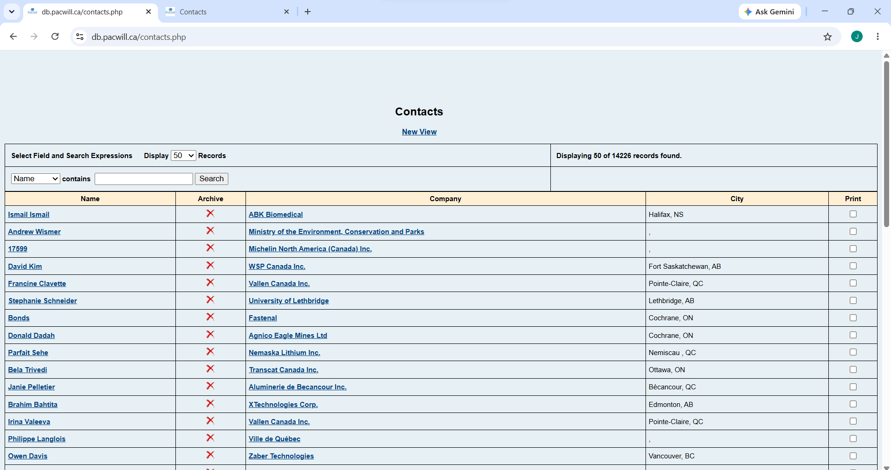
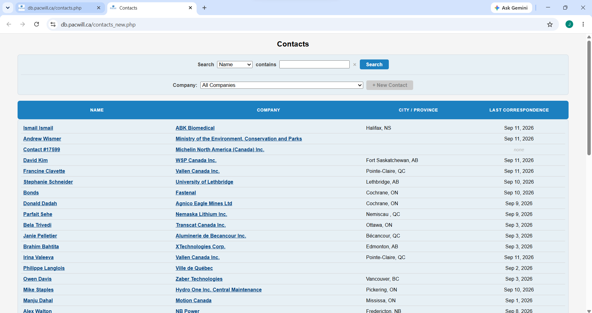

Jovica Materic
Web Application Developer (co-op), Pacwill Environmental
May 11, 2026 – December 20, 2026
University of Guelph, Computer Science co-op work term report
An honest account of learning to work in a real codebase, where most of the job turned out to be understanding what was already there.
From May 2026, I worked as a Web Application Developer at Pacwill Environmental, a laboratory equipment distributor in Stoney Creek, Ontario. I split my time between two codebases: the company's public website, pacwill.ca, and db.pacwill.ca, the internal database and employee portal that runs essentially all of Pacwill's business operations.
My main projects were building a landing page for every product in the company catalogue, with the help of a PDF parsing tool I wrote for the job, responding to bug reports and feature requests from employees across the company, and joining an ongoing effort to modernize and containerize Pacwill's software. What follows covers what I did, the goals I set and how they turned out, and what I found hardest about working in a system older than I am.
About Pacwill

Where Pacwill sits: between American manufacturers and Canadian customers, with the whole relationship tracked in the internal portal I spent the term working on.

Pacwill's office in Stoney Creek, Ontario, where I spent two days a week.
Pacwill Environmental is a laboratory equipment distributor based in Stoney Creek, Ontario, specializing in air samplers, the instruments organizations use to measure what's in the air. Its customers include the Government of Canada, factories, and industrial organizations across the country that need to monitor air quality.
Pacwill doesn't manufacture these instruments itself. Instead, it acts as the bridge between American manufacturers, including Tisch Environmental and Teledyne, and the Canadian market, handling the marketing, networking, distribution, and customer relationships that get the equipment to the people who need it. Pacwill also installs, services, and repairs equipment, work done by its engineering team and by the company's President, Sean Miner. It serves customers in both English and French, so its public website, pacwill.ca, exists in both languages.
What makes Pacwill interesting from a computing perspective is how much it runs on its own software. Behind the public website sits a custom-built database and employee portal, db.pacwill.ca, which handles essentially all of the company's business operations. That meant the web development I did wasn't a side project. It was the software the company runs on.
What it was like to work there
Pacwill is a small company, and that turned out to be one of my favourite parts of the job. I got to know the people I worked with personally, rather than being one intern among many. The environment was calm, and expectations were practical rather than arbitrary. Nobody measured my work in lines of code. The standard was simply to get the feature done by the end of the week, and how I got there was up to me. I liked being handed a goal and trusted to figure out the path.
My Job
My official title was Web Application Developer (co-op), and the job offer described the responsibilities in a single line: development of web applications, and other duties as assigned. In practice, that covered a lot of ground. I worked a hybrid schedule, two days a week in the Stoney Creek office and three from home, across two codebases: the public website, pacwill.ca, and the internal database and employee portal, db.pacwill.ca. Both are built with PHP, SQL, HTML, CSS, and JavaScript.
The public website
About a month into the term, we noticed that pacwill.ca ranked poorly on Google searches and often sent people to product PDFs instead of proper web pages, which meant Pacwill was losing potential customers. Working with the marketing department on search engine optimization, I set out to build a landing page for every item in the company catalogue. The first thing I did was write a tracker script showing which items had a landing page and which still needed one. I then organized the remaining pages into batches, prioritizing the items with the highest sales.

The product search on pacwill.ca. What a customer finds from here is the difference between a sale and a bounce.

Before: a search result dropped the customer into a raw PDF spec sheet. Google had little to index, so the page ranked poorly.

After: the landing page I built for the same product. Readable for customers, and indexable by search engines.

The tracker script I wrote first, before building any pages. It showed which catalogue items still needed one, which is what let me batch the work by sales priority instead of guessing.
Building every page by hand would have taken the rest of my term, but the product details already existed in the manufacturers' spec sheets. So I wrote a Python tool that reads a spec sheet PDF, sends it to the Claude API, and generates a landing page from the extracted data. I used an AI model instead of a standard PDF library because some of the PDFs were so old that modern Python PDF libraries couldn't read them. It was also my first time working with an API.

The PDF parser. It reads a manufacturer's spec sheet, sends it to the Claude API, and returns structured data I could turn into a landing page. Some of the source PDFs were old enough that standard Python libraries couldn't read them at all.
Along the way, I consolidated the site's search and page-linking code, which had been copied into several places, into a single shared file used by both the English and French versions. I also fixed display and file-loading bugs that only appeared in certain browsers.
The employee portal
Most of my work on db.pacwill.ca came through a company-wide Teams channel called IT Development, where anyone at Pacwill can report a problem or request a feature. Working through those requests was a big part of my day-to-day. That meant fixing bugs, many of which traced back to outdated PHP libraries, and building features employees asked for. I also built new view pages that modernized the portal's interface.

Old View

New View
Modernizing the system
Later in the term, I joined the effort to modernize how Pacwill's software is developed and deployed, following a phased plan led by Daniel. Daniel taught me Docker, and we worked together to write the Dockerfiles for db.pacwill.ca, which runs as two containers, one for the Apache server backend and one for the employee portal, along with compose files that lint the codebase and flag outdated PHP libraries. The worst of those was PHPMailer. Pacwill was still running version 5.2, and essentially every function in it had changed, so we worked through the official PHPMailer upgrade guide to bring it up to date. I'm currently working on moving the company's stored files to Google Cloud Storage. The project is still ongoing, and the Challenges section covers what made it so difficult.
Where my skills came from
I came into this job with a strong foundation in C and Python, but little real experience with web development. I learned most of my PHP and SQL by reading the existing code. The course that prepared me most was CIS*2750, nicknamed "Angel of Death." It wasn't nearly as thorough as professional development, but it introduced a broad range of software development concepts that I ran into again at Pacwill. I'd estimate the course gave me about 30% of what I needed. The other 70% I learned on the job, much of it working with Daniel, who introduced me to Git, Docker, Google Cloud, Google Artifact Registry, Claude Code, and modern development workflows. Google Cloud was entirely new to me, and it's the reason I plan to take CIS*4010, Cloud Computing.
Goals and Reflection
I set five learning goals at the start of the term. Below is each goal, what actually happened, and how it turned out.
1. Technological literacy Met
Develop working proficiency in the languages and technologies behind Pacwill's business management system, and help modernize legacy code. Success meant refactoring at least three legacy modules.
I started the term with a strong foundation in C and very little meaningful experience with the languages used for web and database work. Reading the existing code turned out to be the fastest way to learn it. I passed the three-module target well before the end of the term, between consolidating the site's search and linking logic, rebuilding portal pages, and the modernization work. The clearest sign of my growth isn't the count, though. It's that I went from looking up basic syntax in May to being trusted with infrastructure work by the end of the summer.
2. Integrative communication Met
Work directly with colleagues and end users to turn their needs into working features and fixes. Success meant at least three requests verified by the person who asked.
Most requests came through the IT Development Teams channel, and I handled far more than three. What this goal actually taught me is that people describe symptoms, not causes. Someone would report that a page stopped working or a PDF wasn't generating, and I'd have to message them back to find out exactly what they clicked and what they saw before I could tell what was wrong in the code. The search engine optimization work with the marketing department was different again, more back-and-forth about what customers should see than about any specific bug. Both taught me to communicate with people who don't write code.
3. Problem solving Met Bug log abandoned
Identify, reproduce, and resolve bugs in a live production environment, keeping a log of each bug's symptom and root cause.
Debugging a live system is nothing like debugging my own projects, because I can't casually try things to see what happens. Most bugs arrived with no error message, just a description of what went wrong.
The most common failures were database query and connection problems. A page would load empty, or die halfway through and tell me nothing. My method was about as basic as it gets: scatter echo statements through the file, see how far it got before stopping, then move them closer together until I found the exact query that failed. Not sophisticated, but it worked every time, and it forced me to actually follow a file's logic instead of guessing at it.
The most memorable bug was a site-wide outage. I spent hours hunting for what I'd broken before discovering that nothing in the code was wrong at all. A coworker had reconfigured the database to block connections from the office IP address, so the fix was a change in Google Cloud rather than in the code. That one taught me the bug isn't always in the code.
I never kept the bug log my action plan called for. It wasn't a well-designed goal to begin with, and I abandoned it as my job duties evolved. Tracking symptoms and root causes in a separate document assumed my work would stay bug-focused, and by mid-term most of it had shifted toward building landing pages and modernization work. What I kept instead were comments in the code near the fixes.
4. Personal organization and time management Met
Adopt a structured workflow so deadlines are met without sacrificing code quality, using a spreadsheet to break work into manageable tasks and regular check-ins with supervisors.
The landing page project is where this actually mattered. Writing the tracker script first, then moving its results into a spreadsheet, is what let me batch the work by sales priority instead of working through the catalogue in whatever order I happened to open it.
The habit I'm keeping is checking priorities instead of assuming they hold. What's urgent in September isn't necessarily what was urgent in June, and asking my supervisor early cost me nothing.
5. Information literacy Met
Independently research, evaluate, and implement technical solutions using documentation, forums, and other developer resources, and document what I learn.
The PDF parser pushed this the furthest. Almost none of it was something I already knew how to do. I'd never worked with an API before, so I spent real time figuring out how requests are structured and how to get a response back in a usable format rather than a paragraph of prose. Rushing that reading would have cost more time than doing it.
The other half was reading code nobody had documented. Large parts of both codebases have no comments and no one left to ask, so I got used to tracing a file top to bottom and building an understanding from what the code actually does. I left comments behind for whoever comes next.
Challenges
The hardest part of my term wasn't writing new code. It was dealing with code that had been accumulating since before I was born.
"Upgrade the version number" is not a plan
Parts of db.pacwill.ca were originally written for PHP 4, a version released in 2000. The modernization plan called for getting the codebase to PHP 8, and I went into that assuming it would mostly be a matter of finding what broke and fixing it. It wasn't. Functions we relied on had been deprecated in one version and removed entirely in a later one. Libraries had been rewritten so thoroughly that upgrading meant relearning them rather than swapping a file. Some old functionality had no modern equivalent at all, and the only honest answer was to decide whether to rebuild it or drop it.
PHPMailer, the library that sends the company's email, was the clearest example. Pacwill was running version 5.2, and essentially every function in it had changed in the versions since. There was no shortcut. We worked through the official upgrade guide and went function by function.
The lesson I took from this is that old software isn't just old code. It's years of accumulated decisions, dependencies, and assumptions, some of which nobody remembers making. A version number makes that look like a small gap. It isn't.
Code with no one left to ask
Both codebases grew over many years, built largely by people whose background was in mathematics rather than software engineering. That history shows in the structure. There are no comments through large sections, and the people who wrote them are no longer at the company, so the code is the only source of truth about what the code does.
I got used to tracing a file from top to bottom and building an understanding out of what was actually there. Two things made that harder. The same logic had often been copy-pasted into several files, so a fix in one place quietly left the same bug alive in three others. And global variables were used heavily, meaning a file's behaviour could depend on something set far away in a file I hadn't opened yet. Upgrading PHP versions made this visible, because variables that had worked fine for years suddenly came back undefined in certain paths through the code.
That's why the modernization plan grew a phase that wasn't in the original scope. An automated pipeline is only as good as the tests it runs, and the codebase as it stood couldn't be meaningfully tested, so the application had to be cleaned up before any of the automation could be built on top of it. My contribution here was mostly at the Docker layer, where Daniel and I wrote compose files that lint the codebase and flag outdated libraries, so problems surface automatically instead of being found by hand.
What I'd tell myself in May
The bugs I expected to be hard were the ones with cryptic error messages. Those turned out to be the easy ones. The hard problems were the ones where nothing was technically broken, the code just carried assumptions that stopped being true.
Conclusion
I came to Pacwill in May able to write C and Python, and not much else. I leave able to work in a production PHP and SQL codebase, build and debug features that people depend on, and reason about how an application gets packaged and deployed rather than just how it runs on my laptop.
The part I didn't expect was how little of the job was writing new code. Most of my work was understanding code that already existed, usually code with no documentation and no one left to explain it. Reading unfamiliar code turned out to be the single most useful skill I built this term, more than any specific language or tool.
The other thing I'd carry forward is that the interesting problems weren't the ones with error messages. A site-wide outage caused by a firewall rule, a PHP upgrade blocked by two decades of accumulated assumptions, a search that technically worked but sent customers to the wrong place: none of those looked like bugs in the code, and none could be solved by reading the code alone. The job was figuring out which of those a problem actually was.
My work term isn't finished. I'm at Pacwill through December, and the migration is still underway. But the difference between the developer who started in May and the one writing this is that I now get handed infrastructure work and know where to begin.
Acknowledgments
Thank you to everyone at Pacwill Environmental for making this a genuinely good place to learn, and to the University of Guelph co-op department for the placement. In particular, thank you to Sean Miner for the opportunity and the trust that came with it, to Daniel Wang for teaching me most of what I know about modern development practice, and to Tom Johnson for always being willing to stop and answer a question.